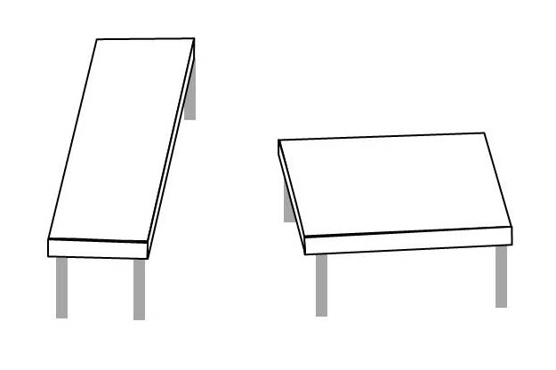

IMPORTANT
These are notes I took in 2018, and they're my most popular posted article. I need to caution you that since then the course has likely changed, as well as some of the material. Science is always on the move, new data supersedes old. So, please don't use this as a substitute for either attending or taking your own notes. If they help your studies of well-being, I'm grateful. If you're using them merely to help pass the course . . . I think you're missing the point. --clf
The Yale Course, "Science of Well-Being," Notes

The Yale Course can be taken for free through Coursera. I encourage you to take advantage of it!
https://www.coursera.org/learn/the-science-of-well-being
Contents
- The Yale Course, "Science of Well-Being," Notes
- Contents
Week 1 - Introduction
Why take this course?
Objectives
- Assess your current level of well-being and produce a baseline measurement of well-being
- Discover your signature strengths and apply them in your life for at least one week
Happiness Can Be Learned
- The course is not only about science, but also practice.
- The course was designed to be self-validating, determining if the course was efficaceous, by measuring happiness before and after the course.
- Topics:
- Misconceptions About Happiness
- Why Our Expectations Are So Bad
- What Stuff REally Increases Happiness
- Strategies to Reset Our Expections
- Putting Strategies Into Practice
- Why now?
- The science of psychology has lots of new insights into happiness
- We need these insights pretty badly
- I [Laurie Santos] need these insights, too
GI Joe Fallacy
"Learning is half the battle" is false
Merely knowing something is not enough to put it into practice.
Optical illusions demonstrate that even knowing "both lines are the same" doesn't prevent seeing them as different. You can't teach your eyes to see it differently.
Muller-Lyer Illusion. The lines between the arrows are the same length.
Shepard's Tables Illusion. The table tops are the same dimensions.

However, you can learn techniques habits to improve well-being.
Rewirements
- Measure Your Baseline Happiness Using the PERMA Profiler
- Measure Your Baseline Happiness Using the Authentic Happiness Inventory
References
Governments Using "Nudge" Approaches Jachimowicz & McNerney (2015). Should Governments Nudge Us to Make Good Choices? Scientific American.
(2014). Nudge nudge, think think. The Economist.
Thaler (2014). The Power of Nudges, for Good and Bad. New York Times.
Current State of Happiness in the U.S. Meyers (2013). Americans Most Unhappy People in the World. ABC13.
Books and Other
Books
- Martin Seligman, Flourish: A New Understanding of Happiness and Well-Being - and how to Achieve Them (a fantastic overview of positive psychology from the father of this discipline)
- Ed Diener, Happiness: Unlocking the Mysteries of Psychological Wealth (a nice introduction to the science of well-being from one of its pioneers)
- Daniel Lerner & Alan Schlechter, U Thrive: How to Succeed in College (and Life) (a book aimed towards undergraduates which covers many of the rewirements taught in this course)
Free Online Talks
- Martin Seligman’s TED Talk - The new era of positive psychology
Week 2 - Misconceptions About Happiness
What do we think will make us happy?
Objectives
- Understand that simply knowing is not enough to change behavior
- Give examples of what things won’t make you as happy as you think they will
- Revise and reconsider goals and aspirations that will not lead to improved well-being
- Practice savoring and gratitude every day for at least one week
Rewirements
- Savoring & Gratitude
- One savored experience per day
- Write down five gratitudes per day
Things We Think Will Make Us Happy (But Don't)
- Good job
- Lots of money
- Awesome stuff
- True love
- The perfect body
- The perfect grades
Why We Have Misconceptions
Why don't these things make us happy? The two standard answers (especially from students) are:
- Happiness is just set genetically, so can't really be changed.
- Stuff happens and messes things up. (Life circumstances make happiness temporary)
These two answers are wrong, according to the data. The genes/circumstances vs our influence breaks down this way:
- 50% Genetic Setpoint
- 10% Life Happens
- 40% Thoughts and Actions
Our thoughts and actions have a 40% influence on our happiness
A typical fallacy in thinking at this point:
"OK, that science stuff might be true for everybody else, but I really will be happy if I have the perfect job/salary/body/grades."
Which leads to the first annoying feature of the mind: Our mind's strongest intuitions are often totally wrong.
If a baseball and a bat cost $1.10
together, and the bat costs $1.00
more than the ball, how much
does the ball cost?
The intuitive answer is 10 cents. But the correct answer is 5 cents.
References
G.I. Joe Fallacy
Santos & Gendler (2014). Knowing is half the battle? Edge.
This article defines the G.I. Joe Fallacy which is the mistaken idea that knowing is half the battle. The article reads, “recent work in cognitive science has demonstrated that knowing is a shockingly tiny portion of the battle for most real world decisions.”
Good Job
Gilbert et al. (1998). Immune neglect: A source of durability bias in affective forecasting. Journal of Personality and Social Psychology, 75, 617-638.
This paper tells us why we don’t feel as bad as we think we will when turned down for a job
Money
LinkedIn Survey (2014). What recent grads care the most about.
{kind=link}
This graphic shows what recent grads care about the most (hint: it’s money)
Lyubomirsky (2007). The How of Happiness: A New Approach to Getting the Life You Want. New York, NY: Penguin Books. Page 44.
This book tells us salary goals rise as salary rises
Eagan, et al. (2015). The American Freshman Survey. Higher Education Research Institute, Page 53, Weighted National Norms—All Respondents.
NOTE - the lecture covers The American Freshman Survey Data from 2005 to show how the average freshman in college answers the question, “what’s very important in life”. In lecture, 70% responded “very well off financially” and 52% “develop a meaningful philosophy.” The stats from 2015, linked above, are actually even more polarizing with 82% and 46%, respectively. In 1967, 42% responded “very well off financially” and 86% “develop a meaningful philosophy” suggesting American values have changed drastically in the past several decades.
Myers (2000). The American Paradox: Spiritual Hunger in an Age of Plenty. New Haven, CT: Yale University Press.
This book tells us, “our becoming much better off over the last four decades has not been accompanied by one iota of increased subjective well-being.”
Diener & Oishi (2000). Money and happiness: Income and subjective well-being across nations. Culture and Subjective Well-Being, Cambridge, MA: MIT Press.
This book excerpt correlates life satisfaction with income across countries (hint: it is not a strong relationship)
Lyubomirsky (2007). The How of Happiness: A New Approach to Getting the Life You Want. New York, NY: Penguin Books. Page 42.
This book also tell us how Life Satisfaction compares between the 1940’s vs. today
Kahneman & Deaton (2010). High income improves evaluation of life but not emotional well-being. PNAS, 107(38), 16489-16493.
This paper tells us why at a certain point, money can’t buy happiness
New York Times. Economic diversity and student outcomes at Yale University.
This article tells us the median income at for Yale graduates at age 34 is $76,000 - most Yalies will earn around the threshold for happiness at $75,000
Awesome Stuff
**MC Big Data (2015). **These are the most name dropped cars in hip hop. Medium.
This graphic highlights how pervasive glorifying awesome stuff like a luxury car is in our culture
Josephs (2013). The most name-dropped liquor brands in rap history. Complex.
This graphic highlights how pervasive glorifying awesome stuff like expensive alcohol is in our culture
Nickerson et al. (2003). Zeroing on the Dark Side of the American Dream: A Closer Look at the Negative Consequences of the Goal for Financial Success. Psychological Science, 14, 531-536.
This paper tells us those with materialist attitude and goals tend to have lower life satisfaction later in life
True Love
Lucas et al. (2003). Reexamining Adaptation and the Set Point Model of Happiness: Reactions to Changes in Marital Status.Journal of Personality and Social Psychology, 84(3), 527-539.
This paper tells us we adapt to marriage after a few years and happiness returns to baseline
Perfect Body
Jackson et al. (2014). Psychological changes following weight loss in overweight and obese adults: A prospective cohort study.PLOS, 9(8): e104552.
This paper tells us weight loss may not make you feel any happier
von Soest et al. (2012). Predictors of cosmetic surgery and its effects on psychological factors and mental health: a population-based follow-up study among Norwegian females. Psychological Medicine, 42(3), 617-626.
This paper tells us plastic surgery does not seem to alleviate mental health problems
Perfect Grades
Levine et al. (2012). Accuracy and artifact: Reexamining the intensity bias in affective forecasting. Journal of Personality and Social Psychology, 103(4), 584-605.
This paper tells us people overestimate how they will feel about certain grades - but the paper also suggests that inaccurately predicting future emotion may be a flaw in the research procedure in which people predict one thing but are later asked to report another
Genes and circumstances
Lyubomirsky (2007). The How of Happiness: A New Approach to Getting the Life You Want. New York, NY: Penguin Books.
_This book tells us genes and circumstances don’t matter as much as we think, 40% of the "_sustainable happiness model” is under the control of our actions and thoughts
Books and Other
- Sonja Lyubomirsky,The How of Happiness: A Scientific Approach to Getting the Life You Want(a great introduction to work in positive psychology and a practical guide to using this work in your daily life)
- Richard Thaler & Cass Sunstein,Nudge: Improving Decisions About Health, Wealth, and Happiness(a nice introduction to the science of behavior changes and how we can work with some of the glitches of our own minds)
Notes
Term: Miswanting The act of being mistaken about what and how much you will like something in the future.
Week 3 - Why Our Expectations are so Bad
Why do we mispredict what makes us happy?
Objectives
- Understand that our strongest intuitions are often misleading (Annoying Feature of the Mind #1)
- Understand that we judge ourselves relative to reference points which are often irrelevant and make us feel worse than we should (Annoying Feature of the Mind #2)
- Understand that our minds are programmed to adapt and ultimately get used to things (Annoying Feature of the Mind #3)
- Understand that we don’t realize how good we are at adapting and coping, and mispredict how certain outcomes will make us feel (Annoying Feature of the Mind #4)
- Discover how cognitive biases (Annoying Features of the Mind) impact your daily life
- Practice kindness and social connection every day for at least one week
Rewirements
- Kindness & Social Connection
- Seven total new random acts of kindness by the end of the week.
- Make one new social connection per day. At least once, take a whole hour to connect with someone you care about.
Annoying Features of the Mind
- Our mind's strongest intuitions are often totally wrong
- Our minds don't think in terms of absolutes, our minds judge relative to reference points
Reference Point A salient (but often irrelevant) standard against which all subsequent information is compared)
Social Comparison The act of evaluating one's own salary/status/possessions/abilities/etc relative to those of other people - Our minds are built to get used to stuff Hedonic Adaptation The process of becoming accustomed to a positive or negative stimulus such that the emotional effects of that stimulus are attenuated over time
- We don't realize that our minds are built to get used to stuff Impact Bias The tendency to overestimate the emotional impact of a future event both in terms of intensity and its duration Focalism The tendency to think just about one event and forget about the other things that happen Immune Neglect Unawareness of our "psychological immune system", our tendency to adapt to and cope with negative events
Notes
- "Research shows that happy people are motivated to do kind things for others."
- "Research shows that happy people spend more time with others and have a richer set of social connections than unhappy people"
- For every $1 your actual income goes up, your "required income" goes up $1.40. (van Paraat & Frijters, 1999)
- The more TV you watch, the more unhappy you are with your income ("estimate of one's own wealth")
- Social media affect on self-esteem due to relative reference points is twice as bad as salary.
- It takes about two years for a couple to get used to marriage. At that point, their happiness is about where it was before marriage.
- We think that when we get something that makes us happy that we'll continue to maintain the same level of happiness. This is just not true.
- Impact Bias is worse for negative events. In other words, we think we'll be way unhappier about a negative event that we actually end up being.
- AND, we don't get better at our estimates with experience. (example: repeatedly taking driver's exam)
- [clf] I think I'm pretty good about avoiding focalism. I may be wrong, but I think I consider all the other things that won't change just because I get the thing I want.
- Kids today tend to be risk-averse, and don't realize how well they can cope. They're mispredicting how well they'll recover.
- I love the CV story:
I think if we created a culture of social media where you gave like the full picture of what it looked like, then that might actually be good, then those might be yardsticks that actually didn't have these detrimental effects. We talked last time with the folks that stuck around about an example in academics where this researcher created his real CV or his real resume. And so, usually, you see people's CV, and it's just all their papers and all their events. But he actually made the real one, which is like all the things he applied for, but didn't get. And there was like all of this, it was like rejected from this grad. This paper got rejected 17 times and you had to submit this was really crappy journal. And I like went through and I felt like if you saw that, you wouldn't feel so bad, because you see your real resume. You see all the stuff that failed.
- People mispredict the result of interacting with strangers. They think they'll be rejected, when it's much more likely they'll be accepted.
- The random kindness benefit seems to be strongest not through reciprocation but through strengthening the social connections.
- It seems like we see other people's rewards as our own. So, doing something nice for someone else seems like something nice was done for us
References
Annoying Feature #1
Our minds’ strongest intuitions are often totally wrong
**Gilbert & Wilson (2000). **”Miswanting: Some problems in the forecasting of future affective states.” In Thinking and feeling: The role of affect in social cognition. New York, NY: Cambridge University Press. Pages 178-197.
This book excerpt defines miswanting which is the act of being mistaken about what and how much you will like something in the future
Annoying Feature #2
Our minds don’t think in terms of absolutes; our minds judge to relative reference points
Medvec et al. (1995). When less is more: Counterfactual thinking and satisfaction among Olympic medalists. Journal of Personality and Social Psychology, 69(4), 603–610.
This paper tells us due to the power of salient reference points, bronze winners tend to be happier than silver medal winners
Lyubomirsky (2007). The How of Happiness: A New Approach to Getting the Life You Want. New York, NY: Penguin Books. Page 44.
This book tells us salary goals rise as salary rises, which may be due to changing reference points
van Praag and Frijters (1999). "The measurement of welfare and well-being: the Leyden approach." In Well-Being: The foundation of hedonic psychology. New York: Russel Sage Foundation. Pages 413-433.
This book excerpt tells us reference points mess up good salaries - for every $1.00 increase in your actual income, your “required income” increases by $1.40
Clark and Oswald (1996). Satisfaction and comparison income. Journal of Public Economics, 61(3) 359-381.
This paper tells us reference points mess up good salaries - if your coworkers make more money than you do, then you will be less satisfied with your job
Solnick and Hemenway (1997). Is more always better?: A survey on positional concerns. Journal of Economic Behavior and Organization, 37, 373-383.
This paper tells us reference points mess up good salaries - in a hypothetical earnings situation people would prefer to make less money if their coworkers make less rather than make more money if their coworkers make more
Clark (2003). Unemployment as a social norm: Psychological evidence from panel data. Journal of Labor Economics, 21(2), 323-351.
This paper tells us those who are unemployed tend to be happier if the unemployment rate in their area is high
O’Guinn and Shrum (1997). The role of television in the construction of consumer reality. Journal of Consumer Research, 23(4), 278-294.
This paper tells us television programs - featuring products and activities associated with an affluent lifestyle - act as a harmful social comparison skewing perception of others’ wealth and our own wealth
Schor (1999). The Overspent American: Why We Want What We Don't Need. New York: NY: Harper Perennial.
This book tells us watching television programs act as a harmful social comparison and increases spending - you can also read an excerpt from the introduction here
Kuhn et al. (2011)****. The effects of lottery prizes on winners and their neighbors: Evidence from the Dutch Postcode Lottery.American Economic Review, 101(5), 2226-2247.
This paper tells us social comparisons influence our spending - people that live next door to lottery winners are more likely to buy a new car
Burleigh and Meegan (2013). Keeping Up with the Joneses affects perceptions of distributive justice. Social Justice Research, 26(2), 120-131.
This paper tells us social comparisons mess up good grades - students would rather miss out on a potential grade increase just so that others in the class don’t get an increase, too
Kenrick et al. (1993). Effects of physical attractiveness on affect and perceptual judgments: When social comparison overrides social reinforcement. Personality and Social Psychology Bulletin, 19(2), 195-199.
This paper tells us social comparisons mess up our perceptions of physical appearance - looking at models make us feel bad
Kenrick et al. (1989). Influence of popular erotica on judgments of strangers and mates. Journal of Experimental Social Psychology, 25(2), 159-167
This paper tells us social comparisons mess up our perceptions of physical appearance - looking at models leads to lower ratings of our partners’ attractiveness
Vogel et al. (2014). Social comparison, social media, and self-esteem. Psychology of Popular Media Culture, 3(4), 206-222.
This paper tells us use of social media makes us compare ourselves to others which lowers our self-esteem - even a manipulated facebook feed featuring people that are worse off than we are does not lead to much higher self-esteem ratings
Annoying Feature #3
Our minds are built to get used to stuff
Di Tella et al. (2010). Happiness adaptation to income and to status in an individual panel. Journal of Economic Behavior & Organization, 76, 834–852.
This paper tells us that we adapt to earning more money (although we don’t adapt to increases in social status as quickly)
Brickman et al. (1978). Lottery winners and accident victims: Is happiness relative? Journal of Personality and Social Psychology, 36(8), 917-927
This paper tells us we adapt to having more money - even in extreme cases of lottery winners
Lucas et al. (2003). Reexamining Adaptation and the Set Point Model of Happiness: Reactions to Changes in Marital Status.Journal of Personality and Social Psychology, 84(3), 527-539.
Remember this paper from last week? This paper tells us we adapt to marriage after a few years and happiness returns to baseline
Gilbert (2007). Stumbling on Happiness. Gilbert (2007) New York; NY: Vintage Books.
This book states, “wonderful things are especially wonderful the first time they happen, but their wonderfulness wanes with repetition”
Annoying Feature #4
We don’t realize that our minds are built to get used to stuff
Levine et al. (2012). Accuracy and artifact: Reexamining the intensity bias in affective forecasting. Journal of Personality and Social Psychology, 103(4), 584-605.
Remember this paper from last week? This paper tells us we overestimate our emotions and getting bad grades won’t make us feel as bad as we think they will - we adapt to bad events, too
Dunn et al. (2002). Location, location, location: The misprediction of satisfaction in housing lotteries. Personality and Social Psychology Bulletin, 29(11),1421-1432.
This paper tells us our predictions are worse for negative events - when you think about the future, you tend to focus on the wrong features and overestimate their importance (as seen in adaption to “bad” dorms)
Gilbert et al. (1998). Immune neglect: A source of durability bias in affective forecasting. Journal of Personality and Social Psychology, 75, 617-638.
This paper tells us people are generally unaware of their the psychological immune system which is why they tend to overestimate their emotional reactions to negative events - example in lecture highlights professors getting tenure or not
Eastwick et al. (2008). Mispredicting distress following romantic breakup: Revealing the time course of the affective forecasting error. Journal of Experimental Social Psychology, 44, 800-807.
This paper tells us we mispredict how we will feel if we break up with a significant other - we think we will feel much worse than we actually do
Sieff et al. (1999). Anticipated versus actual reaction to HIV test results. The American Journal of Psychology, 112(2), 297-31.
This paper tells us people getting an HIV test anticipate more distress given a positive result and anticipate less distress given a negative result which is more extreme than what they experience when they get their results back
Ayton et al. (2007). Affective forecasting: Why can't people predict their emotions? Thinking & Reasoning, 13, 62-80.
This paper tells us affective forecasts (predicting our emotional response given a certain outcome) are too extreme and greater previous experience of an emotional event does not lead to any greater accuracy of the predictions - highlighted in drivers test candidate
Gilbert (2007). Stumbling on Happiness. Gilbert (2007) New York; NY: Vintage Books.
This book also outlines some of cognitive biases covered in lecture such as focalism (the tendency to think just about one event and forget about the other things that happen) and immune neglect (unawareness of our tendency to adapt to and cope with negative events).
Books and Other
- Daniel Kahneman, Thinking Fast and Slow (a fantastic review of work in behavioral decision-making on the ways that our minds suck)
- Daniel Gilbert, Stumbling on Happiness (a laugh-out-loud book that provides important insight into why we often fail to know what will make us happy)
- Dan Gilbert’s TED Talk - The surprising science of happiness
Week 4 - How Can We Covercome Our Biases
How can we counteract our annoying features of the mind?
Objectives
- Understand that experiential purchases are a better investment than material ones
- Give examples of intentional activities you can do to overcome cognitive biases and improve your mood
- Practice healthy habits like exercising for 30 minutes a day and getting over 7 hours of sleep a night
Rewirements
- Exercise
- Sleep.
Overcome Biases
- Rethink "Awesome Stuff" (mitigate hedonic adaptation)
- Don't invest in stuff in the first place. It doesn't continue to make us happy, and it sticks around.
- Instead, invest in experiences.
- Thwart Hedonic Adaptation
- Savoring The act of stepping outside of an experience to review and appreciate it
- Help savoring Talk to another person about it, look for others to share it with, think about how lucky you are, think about sharing later with others, show physical expressions of energy, laugh or giggle, think about how proud you were, be absorbed in the present
- Hurt savoring focus on the future when it will be over, remind yourself it will be over soon, tell yourself it wasn't as good as hoped, remind yourself nothing lasts forever, think about how it will never be this good again, think about ways it could be better, tell yourself you don't deserve it.
- More controversial way: take photos. Beneficial way is to use camera as new way to see things, harmful way is to only focus on the picture, not the experience.
- Habit of replaying happy memories. "Three days/week, for eight minutes, relive a happy experience as if rewinding a videotape and playing it back" Sustained positive emotions four weeks later!
- Negative Visualation Thinking about the reverse that could have happened
- Couples wrote for 15 minutes about how they might never have met their partner, controls wrote about how they met. The former had a higher boost in happiness.
- Make This Day Your Last What if specific situations in your life were going to end soon in a real way.
- Such as "think about graduating." Imagining it "soon" and all the good things you "had" increased happiness. Imagining it "far" decreased happiness.
- Think about losing something that makes you happy, good things pop up.
- Gratitude The quality of being thankful and a tendeny to show appreciation for what one has
- Writing down five things is very powerful
- Sharing is even more powerful. Seligman's "one letter of gratitude delivered in person" yielded six months of effect.
- The act of expressing gratitude from a superior increases work.
- Savoring The act of stepping outside of an experience to review and appreciate it
- Reset Your Reference Points
- Concretely Re-Experience Reexperience what your previous reference point was.
- Concretely Observe Find a reference point that's not as good as yours. Really see what the other half is like.
- Avoid Social Comparisons The worst kinds of reference points are other people.
- Stop Technique: if you recognize these comparisons, just say "Stop".
- Experience gratitudes.
- Be conscious of the kinds of social comparisons coming in.
- Get rid of social media
- Interrupt Your Consumption Pause and come back to the positive experience, which resets the reference point
- Correlary: for bad things, do it all at once to hedonically adapt as quickly as possible.
- Increase Your Variety So, reset reference point and interrupt comparison. Don't eat the chocolate ice cream cone each day. Or, space out when you have the enjoyable thing.
Notes
Focus not on the getting things we think make us happy, but on healthy practices
In the study Babyak et al. (2000), they found that the relapse into depression among major depressants was lowest--and recovery from depression highes--in people who only exercised. Exercise was 30/day, 3x/week.
Numbers below are Recovered/Partially Recovered/Relapsed percentages.
Exercise Medication Combination 90/5/7 52/7/39 60/6/32 Congnitive performance is also significantly better with more physical exercise. (Not necessarily doing cognitive exericises)
Some researchers recommend a nap in the middle of the day to get a cognitive boost. (That's not what's going on with me!)
Insights also come threefold more with enough sleep
Part of us believes the new car is better because it lasts longer. But in fact that's the worst thing about the new car... It will stay around to disappoint you. --Dan Gilbert
A new car sticks around to disappoint you. But a trip to Europe is over. It evaporates. It has the good sense to go away, and you are left with nothing but a wonderful memory. --Dan Gilbert
- Investing in experiences over stuff holds across income levels. But as income goes up, the gap widens. The more money you make, the more experience makes you happy, and things don't.
- Thinking about an experience in advance gives a higher happiness boost than with things.
- Telling people about experiences is better socially than telling about stuff.
- Social comparison is harder with experiences than stuff, so not only are you (the experiencer) happier, but also the people you engage with are happier.
- Interestingly, in Emmons & McCullough (2010) study on listing gratitudes, the "mental" happiness reported by people who listed hassles, and the control group who listed life experiences, were about the same. Hassles had a more negative affect on subjective and objective physical well-being. People reported worse symptoms, and exercised less.
- Could it be that commercials help us enjoy TV shows more? In Nelson et al. (2009) study says yes. (Personal note: The study was using a sitcom, and I imagine it originally had commercials. I think this might be different than a show designed without commercials--or, a film.)
References
Rethink “Awesome Stuff”
Invest in experiences rather stuff
Boven & Gilovich (2003). To Do or to Have? That Is the Question. Journal of Personality and Social Psychology, 85(6), 1193–1202.
This paper tells us it is better to do than to have - experiences make people happier
Kumar et al. (2014). Waiting for Merlot: Anticipatory Consumption of Experiential and Material Purchases. Psychological Science, 25(10),1924-1931.
This paper tells us experiences have a longer-lasting effect on happiness
Pchelin & Howell (2014). The hidden cost of value-seeking: People do not accurately forecast the economic benefits of experiential purchases. The Journal of Positive Psychology,9(4), 322-334.
This paper tells us when looking at future purchases we’re more likely to value material purchases over experiential purchase but when looking at past purchases we’re more likely to value experiences over material goods
Boven et al. (2010). Stigmatizing materialism: On stereotypes and impressions of materialistic and experiential pursuits.Personality and Social Psychology Bulletin, 36(4), 551–563.
This paper tells us we are socially driven to avoid materialism
Howell & Hill (2009). The mediators of experiential purchases: Determining the impact of psychological needs satisfaction and social comparison. The Journal of Positive Psychology, 4(6), 511-522.
This paper tells us experiential purchases make you feel more alive and are less susceptible to social comparisons
Thwart Your Adaptation
Savoring
Jose et al. (2012). Does savoring increase happiness? A daily diary study. The Journal of Positive Psychology, 7(3), 176-187.
This paper tells us savoring positive experiences makes you happier
Lyubomirsky et al. (2006). The costs and benefits of writing, talking, and thinking about life’s triumphs and defeats. Journal of personality and social psychology, 90(4), 692.
This paper tells us thinking about life’s positive moments makes you happier-- and so does writing about life’s negative moments
Negative visualization
Koo et al. (2008). It’s a wonderful life: Mentally subtracting positive events improves people’s affective states, contrary to their affective forecasts. Journal of Personality and Social Psychology, 95(5), 1217–1224.
This paper tells us thinking about how something good in your life might not have happened actually makes you happier
Make this day your last
Kurtz (2008). Looking to the future to appreciate the present: The benefits of perceived temporal scarcity. Psychological Science, 19(10), 1238-1241.
This paper tells us you enjoy things more when you think it’s going to end soon
Gratitude
Emmons et al. (2003). Counting blessings versus burdens: An experimental investigation of gratitude and subjective well-being in daily life. Journal of personality and social psychology, 84(2), 377.
This paper tells us that gratitude - counting the good things in our lives - makes us happy
Seligman et al. (2005). Positive Psychology Progress: Empirical Validation of Interventions. American Psychologist, 60(5):410-21
This paper explores several happiness interventions and tells us gratitude interventions can increase happiness
Barton et al. (2015). Linking financial distress to marital quality: The intermediary roles of demand/withdraw and spousal gratitude expressions. Personal Relationships, 22, 536–549.
This paper tells us being grateful can help us through difficult times (as seen in the case of marriage)
Grant & Gino (2010). A little thanks goes a long way: Explaining why gratitude expressions motivate prosocial behavior. Journal of personality and social psychology, 98(6), 946.
This paper tells us receiving gratitude makes us feel valued and motivates us to be more generous
Reset Your Reference Points
**Morewedge et al (2010). **Consuming experience: Why affective forecasters overestimate comparative value. Journal of Experimental Social Psychology, 46 (6), 986-992.
This paper tells us how we predict how happy something will make us in relation other standards either inferior or superior. The example in lecture is thinking about how much you will enjoy eating potato chips in comparison to chocolate and then in comparison to sardines.
Interrupt consumption
Nelson & Meyvis (2008). Interrupted consumption: Adaptation and the disruption of hedonic experience. Journal of Marketing Research, 45(6), 654-664.
This paper tells us that despite not wanting them, breaks actually make us enjoy positive experiences more
Nelson et al. (2009). Enhancing the Television-Viewing Experience through Commercial Interruptions. Journal of Consumer Research, 36(2), 160-172.
This paper tells us that commercials actually make watching TV more positive
Books and Other
- Robert Emmon Thanks! The New Science of Gratitude Can Make You Happier(a nice introduction to the work on gratitude and happiness)
Week 5 - Stuff that Really Makes Us Happy
What can we do to improve our happiness?
Objectives
- Understand that seeking a higher salary and good grades can sometimes make us happy with the right mindset
- List the behaviors scientifically linked to improved well-being, such as being kind, connecting with others, valuing time, meditating, getting more sleep, and exercising
- Practice meditation and conduct a gratitude visit
Rewirements
Meditate 10 min/day
Gratitude Letter/Visit
One of your last rewirements is one that research suggests will have a big impact on your happiness and that of another person. This week, write a letter of gratitude to someone you care about. For this assignment, think of one living person who has made a big difference in your life, but whom you never properly thanked. Then find a quiet spot when you have a half-hour free and write a heartfelt letter to that person explaining how he or she has touched your life and why he or she is meaningful to you. Your letter can be as long as you want, but try to make it at least 300 words or so. Then you must deliver that letter to the person in question. Just say you want to talk to that person without explaining why. You could read the letter to your chosen person over the phone or Skype, but for an extra huge happiness boost, we recommend scheduling a time to visit this person in person to share your letter. However you meet up, you should read the letter aloud. We also recommend that you both have some tissues handy for this one. A gratitude letter is one of the most powerful tool for increasing happiness because it can forge social bonds and really change someone’s life.
Better Wanting Part 1
Wanting the Right Parts of What We Already Want
What factors should we want in a job? Signature Strengths and Increasing Flow. Character Strengths [Martin Seligman] A desire, a disposition to act, or a feeling that involves the exercise of judgment that leads to a recognizable human excellence or instance of human flourishing.
- Ubiquitous (widely recognized across cultures)
- Fulfilling (leads to fulfillment, satisfaction)
- Morally-valued
- Not able to dimish others
- The oppostive of a negative trait
- Trait-like (stable individual difference)
- Measurable
- Distinctive (Not redundant w/ other strengths)
- Paragons (some people really have it)
- Prodigies (some people precociously have it)
- Selective absence (some people don't have it)
- Institutionalized (society values it)
Signature Strengths Those character strengths that are most essential to who we are
"Use one of your top strengths in a new and different way every day for one week." Seligman et al. (2005)Increasing Flow The mental state in which a person performing an activity is fully immersed in a feeling of energized focus, full involvement, and enjoyment (aka "the zone")
- Challenging but attainable goals
- Strong focused concentration
- The activity is intrinsically rewarding
- Feelings of serenity
- Loss of self-consciousness
- Timelessness / lose track of time passing
- Lack of awareness of physical needs
- Complete focus on the activity itself
How to achieve flow?
- Looking at challenge and skill, having above 50% in both leads to flow.
Good Grades, What to Really Focus On?
- What goes wrong? Extrinsic Motivation Engaging ina behavior in order to earn external rewards or avoid punishments
- What goes right? Intrinsic Motivation Engaging in a behavior because you enjoy the activity itself
- Extrinsic motivation can undermine instrinsic motivation. Grades are an extrinsic motivator that tends to remove the love of learing.
- A focus on grades can reduce or prevent a growth mindset.
Growth Mindset The belief that intelligence can be trained and that most basic abilities can be developed through dedication and hard work.
Fixed Mindset The belief that basic qualities like intelligence and talent are fixed traits
- A growth mindset can be learned. Hard work is good. Effort leads to success.
Better Wanting Part 2
Wanting Better Stuff That We Don't Want Yet (what should be want)
Kindness (we should be seeking opportunities to be kind). Just thinking about being kind increases happiness. Doing it is even better.
Social Connection
- Less vulnerable to premature death, more likely to survive fatal illnessess, less likely to fall prey to stressful events
- More friends, strong family, more romance = very happy
- Amount of time spent with people predicts happiness
- The science supports that social connections with strangers increases happiness for both the instigator and the recipient--which is the opposite of what they predict.
- Shared experience increases enjoyment.
Better Wanting Part 3
- Time Affluence Feeling like you have enough time to do the things you actually want to do.
- Mind Control
- Mind-Wandering A shift in the contents of thought away from an ongoing task and/or from events in the external envronment to self-generated thoughts and feelings.
- People mine-wander 46.9% of the time.
- People mind-wander 30% of the time in almost all activities (except sex)
- Mind-wandering has a negative impact on happiness
- Default Network A network of interacting brain regions known to activate "by default" when a person is not involved in a task. The DMN is really fast, comes on within a fraction of a second after a task. The DMN thinks outside the here and now (past, future, others). These regions light up when not thinking about the here and now.
- Meditation A practice of turning your attention away from distracting thoughts toward a single point of reference (e.g. the breath bodily sensations, compassion, a specific thought, etc.)
- Meditation builds and strengthens brain matter. Gray matter increases.
- Meditation increases social closeness
- Healthy Practices
- Exercise
- Quality sleep 7+ hours/day
Notes
- Consciously using signature strengths increased happiness and decreased depression
- Increased use of signature strengths at work improved productivity and job satisfaction
- The sweet spot for using signature strengths is 4 of the top 7, which corresponds to a person thinking of a job as a "calling." The graph also showed a big jump in positive work experience from 3 strengths to 4, then it somewhat levels off.
- This use of signature strengths is similar to what I've told people, "find your 'genius'" and be sure your work lets you use that. But this is stronger because a) it's validated science, and b) it's multiple strengths.
- [Passive] Leisure seems like what we'd rather be doing, but it isn't. Being in flow is what satisfies us (high challenge and skill)
- Don't worry about grades. Worry about learning the material.
- Doing a bunch of acts of kindness in one day give a bigger result than doing one a day. This is a surprise. But it implies to me that several acts per day is the way to go.
- Spending money on others increases our happiness more than spending on ourselves. And, it doesn't matter how much we spend.
- In a sense, you can buy happiness--if you spend on others.
- People who chronically prioritize time over money (give up their money to have more time) tend to be happier.
- Charitable giving where you directly see/experience the impact have the highest increase in happiness.
- Using money to eliminate the things we dislike in our day is a way money can buy happiness.
- I love the chocolate experiment. The same exact chocoloate tastes better if someone in the room is eating it, too.
- It seems people who are time-affluent are also more social.
Brewer et all (2011)
Expert meditators (10,000+ hrs) vs controls
Did 3 kinds of meditations
- Loving Kindness Meditation
- Concentration on breath
- Choiceless awareness (just notice thoughts, no judgement)
Is the DMN used less during meditation? Yes.
Are the other regions being activated? Yes (more connections)
Did this change the default pattern? Yes, curbs mind-wandering long-term
Note to self: look into Loving Kindness Meditation (LKM)
Quotes
The best moments in our lives are not the passive, receptive, relaxing times. The best moments usually occur if a person's body or mind is stretched to its limits in a voluntary effort to accomplish something difficult and worthwhile. --Mihaly Csikszentmihalyi
And interestingly, the wealthier you get, the less likely you are to feel like you have enough time. And that seems to be both a function of the objective realities of wealthy people, for example, working more. But also this sort of subjective perception that as your time becomes more economically valuable, you tend to view it as scarce because what is valuable is scarce. --Elizabeth Dunn
So consider another study by Danny Kahneman and Angus Deaton, a psychologist or sociologist at Princeton. They did an analysis of about half a million people surveyed by Gallup which looks at the effects of a bunch of different variables factors on happiness and well being. One is money for instance. So, what they did was they calculated in their data set, what's the effect of a fourfold increase in wealth, in income rather not wealth but income, on your happiness just going from the bottom quartile at the top quartile in their income measure, and they compare that against a bunch of other different variables that could also be correlated with happiness. One of them was, "did you report feeling alone yesterday?" The effect of that alone question, effect of feeling alone on happiness was seven times bigger than a fourfold increase in income. It's crushing. I mean it's a huge effect and I think people just dramatically underestimate that and so they miss like simple opportunities to feel happier. --Nicholas Epley
References
Better Wanting: Part 1
Things we said that don’t make us happy, can make us happy - with a different approach
Signature strengths (in a job rather than Money)
**Seligman (2004). **Authentic Happiness: Using the New Positive Psychology to Realize Your Potential for Lasting Fulfillment. New York, NY: Simon and Schuster.
Chapters 8-10 of this book outline character strengths and the benefits of applying them in your everyday life
Seligman et al. (2005). Positive Psychology Progress: Empirical Validation of Interventions. American Psychologist, 60(5):410-421
This paper explores several happiness interventions and tells us using top signature strengths in a new and different way everyday for one week had an enduring impact on happiness
Lavy & Littman-Ovadia (2017). My better self: Using strengths at work and work productivity, organizational citizenship behavior, and satisfaction. Journal of Career Development, 44(2) 95-109
This paper tells us that those who use signature strengths at work are more productive and more satisfied with their job
Harzer & Ruch (2012). When the job is a calling: The role of applying one’s signature strengths at work. The Journal of Positive Psychology, 7,362-371.
This paper tells us that people enjoy work more and think of work as a calling when they use ~4 signature strengths at work
Flow (in a job rather than Money)
Csikszentmihalyi (2008). Flow: The Psychology of Optimal Experience. New York, NY: HarperCollins.
This books tells us that achieving a state of flow makes an experience genuinely satisfying as people typically experience deep enjoyment, creativity, and a total involvement with life
Csikszentmihalyi (1992). Optimal Experience: Psychological Studies of Flow in Consciousness.Cambridge, UK: Cambridge University Press.
This book offers a comprehensive survey of research on the 'flow' experience - a desirable or optimal state of consciousness that enhances a person's psychic state - in various context/cultures and how it affects work satisfaction, academic success, and the overall quality of life
Csikszentmihalyi (1999). If we are so rich, why aren’t we happy. American Psychologist, 54, 821-827.
NOTE - this paper is NOT mentioned in lecture, but if you do not have access to the books above, you can read this article to get a sense of Csikszentmihalyi’s perspective on how flow relates to happiness
Growth Mindset (rather than Good Grades)
Deci (1971). Effects of externally mediated rewards on intrinsic motivation. Journal of Personality and Social Psychology, 18(1), 105-115.
This paper tells us that positive feedback aids intrinsic motivation, but monetary rewards detract from intrinsic motivation
Dweck (2007). Mindset: The New Psychology of Success. New York, NY: Ballantine Books.
This book outlines how people with a fixed mindset (those who believe that abilities are fixed) are less likely to flourish than those with a growth mindset (those who believe that abilities can be developed)
Grant & Dweck, (2003). Clarifying Achievement Goals and Their Impact. Journal of Personality and Social Psychology, 85(3), 541–553.
This paper tells us having a growth mindset predicts active coping, sustained motivation, and higher achievement in the face of challenge (as seen in pre-med grades)
Blackwell et al. (2007). Implicit theories of intelligence predict achievement across an adolescent transition: A longitudinal study and an intervention. Child Development, 78(1), 246-263.
This paper explores how the growth mindset relates to achievement - if we think we have the ability to improve, we will!
Mangels et al. (2006). Why do beliefs about intelligence influence learning success? A social cognitive neuroscience model.Social Cognitive and Affective Neuroscience, 1(2), 75-86.
This paper tells us those with growth mindsets tend to focus on learning-related goals and bounce back better from failure increasing the likelihood of learning success
Better Wanting: Part 2 & 3
Things that actually make us happy
Kindness
Otake et al. (2006). Happy people become happier through kindness: A counting kindnesses intervention. Journal of happiness studies, 7(3), 361-375.
As the title suggest, this paper tells us that counting your kindness leads to happiness
Lyubomirsky (2005). Pursuing happiness: The architecture of sustainable change. Review of general psychology, 9(2), 111.
This paper tells us that doing random acts of kindness is one of many ways you can take intentional effort to make yourself happier
Dunn (2014). Happy Money: The Science of Happier Spending. New York, NY: Simon & Schuster.
This book tells us money CAN buy happiness if you spend it on the right things such spending money on others rather than yourself
Dunn et al. (2008). Spending money on others promotes happiness. Science,319 (5870), 1687-1688.
This paper tells us spending money on others makes you feel good
Aknin et al. (2013). Prosocial spending and well-being: Cross-cultural evidence for a psychological universal. Journal of Personality and Social Psychology, 104 (4), 635-652.
This paper tells us the happiness that comes from giving to others may be a worldwide, universal human response
Social connection
Myers (2000). The funds, friends, and faith of happy people. American psychologist, 55(1), 56.
This paper tells us that having strong social ties makes you healthier
Diener & Seligman (2002). Very happy people. Psychological science, 13(1), 81-84.
This paper tells us that being social/having strong social ties makes you happier
Epley (2014). Mindwise: Why We Misunderstand What Others Think, Believe, Feel, and Want. New York, NY: Vintage.
This book explores more of our mispredictions and introduces us to more research on the surprising mistakes humans so routinely make
Epley & Schroeder (2014). Mistakenly seeking solitude. Journal of Experimental Psychology: General, 143(5), 1980.
This paper tells us that talking to strangers makes us happy. Even if you are reluctant to talk to a stranger, you and the stranger get a happiness boost after talking to each other
Boothby et al. (2014). Shared experiences are amplified. Psychological Science, 25(12), 2209-2216.
This paper tells us sharing experiences with another person makes them better
Time Affluence
Whillans et al. (2016). Valuing time over money is associated with greater happiness. Social Psychological and Personality Science, 7(3), 213-222
This paper tells us that prioritizing time over money - as a stable preference - makes you happier
Hershfield et al. (2016). People who choose time over money are happier. Social Psychological and Personality Science,7(7), 697-706.
As the title suggests, this paper tells us those that choose time over money are happier - the paper also reveals that the majority of people choose money over time
Moligner (2010). The pursuit of happiness: Time, money, and social connection. Psychological Science, Psychological Science 21(9) 1348–1354)]
This paper tells us that thinking about time makes you happier than thinking about money - thinking about time boosts the motivation to socialize which is associated with greater happiness
Mind Control (via Meditation)
Killingsworth & Gilbert (2010). A wandering mind is an unhappy mind. Science, 330(6006), 932–932.
As the title suggests, this paper tells us that mind-wandering makes us feel bad. This paper also concludes that we mind wander 46.9% of the time!
Mason et al. (2007). Wandering minds: The default network and stimulus-independent thought. Science,315(5810), 393–395.
This paper tells us our brains are wired to wander - mind-wandering is associated with activity in the brain’s default network which is the cortical region active when the brain is at rest
Brewer et al. (2011). Meditation experience is associated with differences in default mode network activity and connectivity.Proceedings of the National Academy of Sciences of the United States of America, 108(50), 20254-20259.
This paper tells us meditation stops mind-wandering
Fredrickson et al. (2008). Open hearts build lives: positive emotions, induced through loving-kindness meditation, build consequential personal resources. Journal of personality and social psychology, 95(5), 1045-1062.
This paper tells us that meditation makes you happier
Hölzel et al. (2011). Mindfulness practice leads to increases in regional brain gray matter density. Psychiatry Research: Neuroimaging, 191(1), 36-43.
This paper tells us meditation increases gray matter
Mrazek et al. (2013). Mindfulness training improves working memory capacity and GRE performance while reducing mind wandering. Psychological science, 24(5), 776-781.
This paper tells us that mindfulness helps working memory and has been shown to increase GRE performance
Hutcherson et al. (2008). Loving-kindness meditation increases social connectedness. Emotion, 8(5), 720.
This paper tells us certain types of meditations can make you feel more socially connected
Healthy Practices - Exercise
Babyak et al. (2000). Exercise treatment for major depression: maintenance of therapeutic benefit at 10 months.Psychosomatic medicine, 62(5), 633-638.
This paper tells us working out three times a week works just as well as Zoloft for depression recovery
Hillman et al. (2008). Be smart, exercise your heart: exercise effects on brain and cognition. Nature reviews neuroscience, 9(1), 58-65.
This paper tells the positive effects of exercise on cognition and brain function
Healthy Practices - Sleep
Dinges et al. (1997). Cumulative sleepiness, mood disturbance and psychomotor vigilance performance decrements during a week of sleep restricted to 4-5 hours per night. Sleep: Journal of Sleep Research & Sleep Medicine, 20(4), 267-77.
This paper tells us sleeping only ~5 hours/night (aka sleep debt) leads to mood disturbances
Walker et al. (2002). Practice with sleep makes perfect: sleep-dependent motor skill learning. Neuron, 35(1), 205-211.
This paper tells us sleeping more helps us learn motor skills
Wagner et al. (2004). Sleep inspires insight. Nature, 427(6972), 352-355.
This paper tells us sleeping boosts cognitive performance
Huffington Post. Lose Sleep, Lose Your Mind and Health
{kind=link}
This graphic shows the negative implications of poor sleep after one night and prolonged over time
Books and Other
Books
- Mihaly Csikszentmihalyi,Flow: The Psychology of Optimal Experience(a wonderful review of the research on flow and how we can get in the zone)
- Martin Seligman,Authentic Happiness: Using the New Positive Psychology to Realize Your Potential for Lasting Fulfillment(a great introduction to the work on happiness generally as well as the power of using your character strengths)
- Carol Dweck,Mindset: The New Psychology of Success(a lovely introduction to the power of a growth mindset)
- Elizabeth Dunn & Michael Norton,Happy Money: The Science of Happier Spending(an elegant overview of the research on the science of spending, explaining how you can get more happiness for your money)
Free Online Talks
- Mihaly Csikszentmihalyi’sTED Talk - Flow, the secret to happiness
- Carol Dweck'sTED Talk - The power of believing that you can improve
- Michael Norton'sTEDx Talk - How to buy happiness
- Matthew Killingsworth'sTED Talk - Want to be happier? Stay in the moment
- Hedy Kober'sTEDx Talk - How can mindfulness help us
Week 6 - Putting Strategies into Practice
How can we intentionally put these strategies into practice and build healthier habits?
Objectives
- Understand that your surroundings play a key role in the types of behaviors you engage in
- List elements of effective goal setting
- Design your environment and practice goal setting strategies to build better habits
- Enjoy your time affluence
Rewirements
- Time Affluence: "Surprise! Your rewirement for this week is that you have no rewirement. Appreciate your time affluence. Use the time you would have dedicated to your weekly rewirement homework to do something fun. This extra time is yours and we want you to enjoy it."
Strategies for Better Habits
Part 1 - Situation Support
- Proximity, convenience, and visibility matter.
So,
- Fix bad environments (get rid of temptations)
- Promote healthy environments (increase desires)
- Use triggers to cue healthier habits
Part 2 - Goal Setting
Need to think about goals in specific ways in order to achieve them.
Goal Specificity The degree of quantitative precision with which a goal is specified. (Who what where when measurable)
Goal Visualization
- Think and feel--indulge--in detail about the goal ("positive thinking")
- Think--dwell--in detail about the barriers to the goal
Mental Contrasting A visualization technique involving first thinking of a positive future outcome followed by thinking of obstacles
Goal Planning
Implementation Intention A self-regulatory strategy in the form of an "if-then plan" that can lead to better goal attainment. So, "If I see the cookies, I'm going to grab the banana." Repeatedly imagining the plan improves the brain's automatic response.
WOOP
Think about
- Your WISH (detailed goal with metrics)
- The best OUTCOME (all the positive stuff and feelings)
- Potential OBSTACLES
- Your If-Then PLAN
Do this every day, several times a day. Takes five minutes in a quiet (uninterrupted), calm environment.
Notes
- Mental contrasting has the better long-term benefit to achieving and maintaining goals
- For easily attained goals, implementation intention doesn't matter much, but for difficult goals, II increases success threefold.
- Pracicing WOOP can double effectiveness on the goal ten weeks out.
Interview Gabriele Oettingen
WOOP is a little bit like a cleaning-up tool so you can clean up your life. You can get rid of those things which might not really belong to you, which you might not really feel passion about. Or that you might not be really kind of able to do in the sense that you feel, okay, there's so much energy and so much costs involved if I want to fulfill that wish. And I put my energy better into things which are more feasible.
The first part is really the search for the right wish. What do I want? It can be a big, life wish, or small such as what do I want in the next meeting. The result is a wish stated in a few words ("put in front of your mind").
Likewise, search for the the best outcome (there's clearly an emotion attached to this), leading to a few words you focus on. Then, let you mind go and really imagine and "feel it out."
Search for the main, inner obstacle. "What is it? No excuses. What is it really?" Phrase it in a few words. Imagine obstacle occuring. Take time to really feel, experience that obstacle. (Notice there's no problem solving.)
Finaly, what could I do to overcome the obstacle? A few words. Then make if-then.
If [obstacle] then I will [effective action]
This takes a lot of mental effort, which triggers automatic processes.
Can use WOOP for a goal you know is feasible. You can also use it to discover if a goal is feasible.
So if you have a kind of eerie feeling about a meeting or if you feel, hmm I don't know whether I should go here or I should go there, this course or that course, this life path or that life path. Then you can actually just have the wish and then by identifying the obstacle in you, find out whether this is something you feel that is overcomeable and is also fitting into your life. Or whether this is something maybe doesn't fit in your life so well at the moment. Or maybe you want to have it let go because you have more important things to do. So WOOP is for going for the feasible wishes but then also for understanding whether something is feasible. And then going for those which are feasible, but also letting go from those that are less feasible. So it's really a cleaning up tool.
WOOP creates associative links, in the brain, linking the outcome with the obstacle and the means to overcome the obstacle.
It also can change the meaning of the obstacle. "So now, that party on Friday night is no longer a fun party but an obstacle to studying."
The big deal with WOOP is the obstacle. "But without recognizing that actually what my obstacle is these behaviors run into empty."
"What is 'motivation'? Energy times direction, if you want."
Negative feedback is no longer a threat, it helps with how to fulfill the wish. It isn't personal.
Wishes come from our needs, and our needs often change.
Isn't evaulative. Treat WOOP like a friend.
Don't switch the Os! You have to think about the outcome first.
Books and Other
- Gabriele Oettingen, Rethinking Positive Thinking: Inside the New Science of Motivation (a nice introduction to the work on using implementation intention and WOOP in your daily life)
Week 7 - Start Your Final Rewirement Challenge
What rewirement will you commit to for the next 4 weeks?
Objectives
Develop a personal plan to execute your Rewirement Assignment
Rewirements
- Pick a rewirement and stick to it for four weeks. You'll write about your experience.
- Take the happiness score quiz each week.
Preparation
Define well-being for you.
In general, being healthy in body and mind, having a supportive social life, feeling satisfied in my career, and enjoying a great friendship with my wife.
Here are the questions for the Peer Review Assignment.
- Which rewirement did you pick and why?
Signature Strengths. I chose this because I'm already being diligent about integrating the other rewirements into my life. - Did you socially committ to the rewirement?
- Did you utilize situation support or goal setting strategies?
- How many times you did you PLAN to do the rewirement and how many times did you ACTUALLY do it? How did you track your progress?
- Did your happiness score change over time?
- How was the overall experience for you?
Rewirements List
- Signature Strengths - using your top character strengths in new ways
- Savoring - taking time to savor the things you enjoy
- Gratitude - (List and/or Letter) - expressing gratitude for the people and things in your life
- Kindness - increasing your acts of kindness
- Social Connection - making connections with strangers and acquaintances along with scheduling time for the people in your life
- Exercise - increasing your physical activity to at least 30 minutes a few times a week
- Sleep - making sure you sleep at least 7 hours a night several times a week
- Meditation - meditating for 5-10 minutes if you are a beginner or increasing your time in meditation if you already meditate regularly
Comment for me? Send an email. I might even update the post!